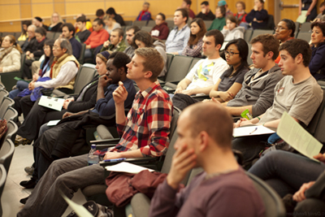

UNDERGRADUATE PROGRAM
ABOUT THE PROGRAM
The Certificate Program in Film Studies offers undergraduates a comprehensive course of study in the history, criticism, theory, aesthetics, and production of the moving image in the unique context of an interdepartmental and interdisciplinary program featuring Film Studies faculty and courses from departments and colleges across the University, including Afro-American Studies, Anthropology, Art and Art History, Asian Languages and Literatures, Communication, Comparative Literature, French & Italian, Germanic Languages and Literatures, Music, Political Science, Spanish & Portuguese, Theater, the Commonwealth College, and the School of Management.
The richness of the Interdepartmental Program in Film Studies’ array of course offerings, incorporating a variety of critical perspectives and methods, reflects the program’s commitment to ensuring that students gain breadth and depth in their study of motion picture media. More than 30 courses are available each semester at the University, exploring the dynamics of screen representation in topics such as media and culture; race, nation and ethnicity; gender and sexuality; film styles and genre; production and distribution; technology and new media, in addition to complementary courses at the Five Colleges.
Since the Program began in 1991, Film Studies graduates have used the Certificate to compete successfully for admission to prestigious film schools and graduate programs; for positions in film and video production; for employment in film and video distribution and exhibition, digital and new media, and as editors, producers, actors and independent filmmakers.
The Interdepartmental Program in Film Studies is the home of the Massachusetts Multicultural Film Festival, an annual series that brings to the campus and Five College community important new international films and visiting filmmakers. Certificate students are encouraged to participate in the Festival’s one-credit colloquium and internship program as well as in the annual Five College Student Film and Video Festival which showcases the best work of undergraduates in the Five Colleges and offers valuable opportunities to Certificate students interested in production to screen their film and video projects and to participate in producing and organizing the Festival.
The Michael S. Roif Award In Film Studies is a competitive annual cash prize awarded to a single student or divided between two students enrolled in the University’s Undergraduate Film Studies Certificate Program whose film, video, or moving image media work demonstrates exceptional creativity and accomplishment. The award is based upon an endowment, made by his family, in honor of Michael S. Roif, a University alumnus and film enthusiast. Previous winners have gone on to achieve further successes in filmmaking.
ADMISSION POLICY
Any student formally enrolled as an undergraduate at the University of Massachusetts Amherst may pursue a Certificate in Film Studies in conjunction with his or her departmental major. Upon graduation, students who have completed all certificate requirements will receive a Certificate in Film Studies that is noted on the transcript, in addition to their UMASS diploma. Students from the other Five Colleges and graduate students are not eligible to earn a Certificate but may enroll in courses.
TO ENROLL
University undergraduates make an initial enrollment appointment with an advisor in the Film Studies office and are expected to update their files in the office every semester thereafter.
Please Note: Students are strongly encouraged to enroll in the program in their freshman or sophomore year. A short advising appointment is recommended each semester to ensure a coherent plan of study. Bring an Unofficial Transcript printed from SPIRE to each advising appointment.
REQUIREMENTS
A student who wishes to obtain the Certificate in Film Studies must fulfill the following requirements: complete a minimum of 6 approved courses (either 3 or 4 credits per course) in film and/or video and television from at least three different departments/programs. These 18 credits are drawn from five categories of courses, including an introductory course in film language; one course in theory or history of film; one in genre or national cinema; one upper‑level seminar (400 or higher); and one elective, preferably a production course. Certificate students must maintain a Grade Point Average of 2.5 or higher within the Certificate Program; no courses with a grade lower than C will count toward the Certificate; no pass/fail courses may be counted towards the minimum requirements. In order to be awarded the Certificate, students must fulfill all criteria and submit a transcript to the Film Studies office for verification of grades in their final semester before graduation.
CORE COURSES
Minimum number of credits for the Film Studies Certificate TOTAL: 18 credits in 6 courses
The following list by category constitutes the core from which these courses will be selected. Please note that in any semester, additional courses are offered in all, or nearly all, categories, but only a few courses are offered every semester. Please see the Undergraduate Advisor if you have any questions.
I. One introductory course - 3 credits
This course should be taken before any other film courses.
Comm 140 Introduction to Film Studies
Comm 231 Film and Television Production Concepts
II. One course each from categories A and B - 6 credits
A. Film Theory/History of Film
Anth 306 Visual Anthropology
Art 689 Introduction to Visual Culture: Theory and Practice
Comm 340 History of Film I
Comm 342 History of Film II
ComLit 381 Self-Reflective Avant‑Garde Film
ComLit 382 Cinema and Psyche
ComLit 383 Narrative Avant‑Garde Film
ComLit 691SC Seminar: Spiritual Cinema
FilmSt 397W Film Writing & Criticism in the Age of New Media
German 390D Fascism and Film
Music 170 Music in Film
B. Genre/Director/National Cinema
Comm 297L Asian Cinemas
Comm 345 Contemporary World Cinema
Comm 397Q The Film Star in International Context
Comm 397S Asian Pacific American Cinema
Comm 446 Film Documentary
Comm 493C Seminar: Countercultural Films
Comm 497N Asian Pop Cinema
Comm 497U Film & Society
ComLit 384 Vietnam in Literature and Film
ComLit 385 Russian Themes World Cinema
English 469 Victorian Monstrosity
French 350 French Film (also ComLit 391B)
French 353 African Film
German 304 From Berlin to Hollywood
German 597 Special Topic: The East German Cinema
Honors 292P American Portraits: Lives through Film
PolSci 201 American Politics through Film
PolSci 293A Politics of European Film
Portug 408 Brazil in Film and Fiction
Spanish 397W Latin American Cinema
Spanish 497 Spanish Film
III. One course from either category A or B. - 3 credits
IV. One upper‑level seminar (level 400 or higher) - 3 credits
Students are urged to take Comm 240 and at least one course from category II (A or B) before taking an upper‑level seminar.
Comm 493B Social Imagery and Stereotyping in American Film
Comm 493C Seminar: Countercultural Films
Comm 493D Seminar: Film Persuasion and Propaganda
Comm 497D International Women Filmmakers
Comm 497Z American Cinema in the 1970's
Comm 445 Seminar: Screenwriting
Comm 446 Film Documentary
Comm 546 Film Theory and Criticism
Comm 593D Seminar: Advanced Screenwriting
ComLit 499D Narrative Avant Garde Film (Commonwealth Capstone course)
Portug 597A Brazilian Film
Spanish 497A Spanish Film
V. One elective from any of the above categories or a film/video production course - 3 credits
A production course is strongly encouraged but not required.
Art 230 Photography I
Art 231 Photography II
Art 271 Introduction to Computers in the Fine Arts
Art 297V Introduction to Video Production
Art 330 Photography III
Art 374 Introduction to Computer Animation
Art 375 Digital Media Time Based
Art 397Z Computer-Aided Graphic Design
Art 431 Photography IV
Art 497J Advanced Video Production
Comm 331 Program Process in TV
Comm 441 Principles and Techniques of Film Style Production
Comm 433 Advanced Television Production and Direction
Comm 445 Seminar: Screenwriting
Comm 497J Advanced Video Production
Five College Film & Video Course Guide
The Interdepartmental Program in Film Studies compiles a Course Guide of all film and video courses taught at UMass Amherst, Hampshire, Mount Holyoke, Smith, and Amherst for each semester. See our course guide or at www.fivecolleges.edu/sites/film. Hard copies are also available for in-house use in the Film Studies office in S448 Integrative Learning Center.
Advising
All students should visit the Film Studies office for advising and to update their files each semester.
Note: Please bring an Unofficial Transcript printed from SPIRE to each advising appointment.
Alternative Course Offerings
Students need to request approval from the Film Studies Chief Undergraduate Program Advisor to apply credit toward the Certificate for courses not on the above list, including courses taken at the other Five Colleges.
Transfer Credits and Substitutions: Of the 18-credit minimum for the Certificate, at least 4 courses (12 credits) must be taken at the University of Massachusetts Amherst; with approval from the Film Studies Office, a maximum of 6 credits (2 courses) may be transfer credits from other institutions, including the Five Colleges.
Certain courses in media production and film studies that are offered through Continuing Education during intersession and summer sessions and that are normally listed by the participating departments during the fall and spring semesters may count toward the Certificate. These include Comm 240 Modes of Film; Comm 342 Film History II; Comm 331 Program Processes in Television; Comm 441 Principles and Techniques of Filmmaking; English 339 Film and Literature. Students who complete the 18-credit minimum are encouraged to continue to avail themselves of the rich film study opportunities on campus and in the Five Colleges.